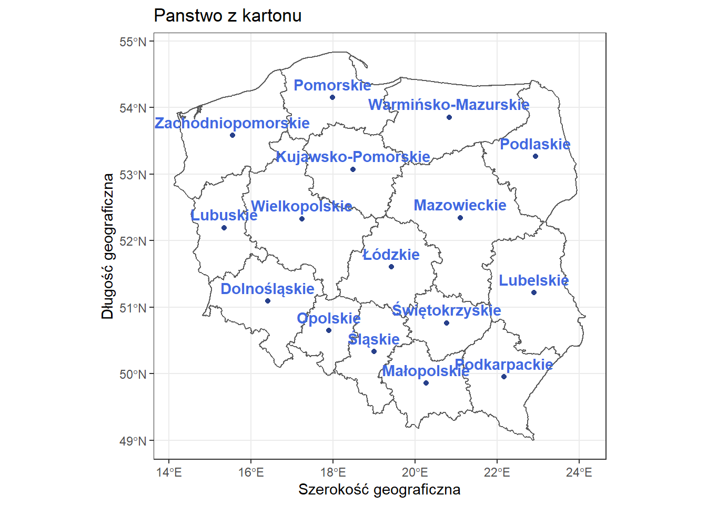
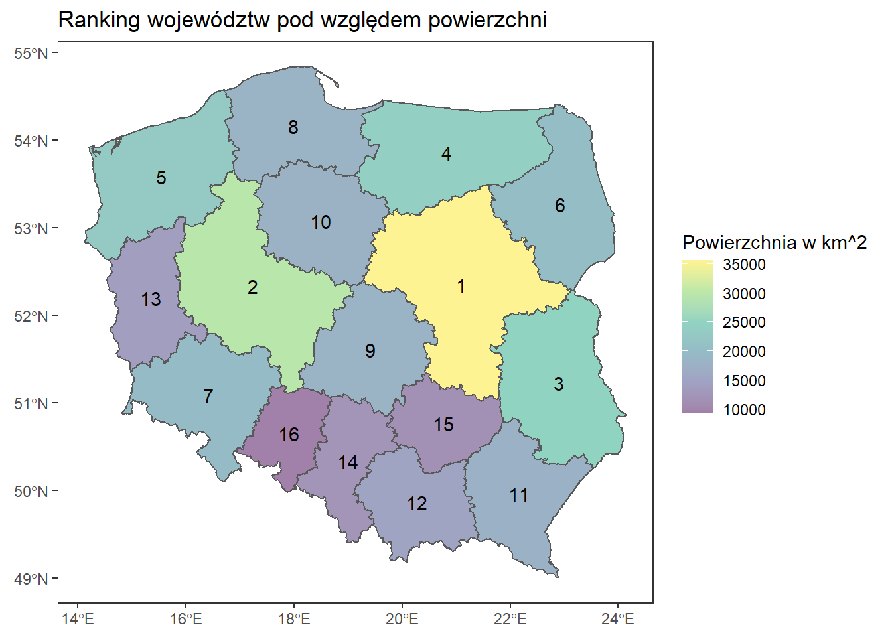

Wgranie potrzebnych bibliotek.
library(ggplot2)
library(sf)
library(dplyr)
library(rnaturalearth)
library(rnaturalearthdata)
library(ggspatial)
library(maps)
library(tools)
library(lwgeom)
library(ggrepel)
library(cowplot)
library(PogromcyDanych)Wgranie mapki swiata, Polski oraz ustawienie motywu domyslnego. Mapa zostaa pobrana z strony (GADM)
theme_set(theme_bw())
world <- ne_countries(scale = "medium", returnclass = "sf")
polska <- readRDS("C:/R/MAPA/DlaR/gadm36_POL_1_sf.rds")
class(polska)## [1] "sf" "data.frame"Mapa polski z podpisanymi regionami.
punkty_centralne <- cbind(polska, st_coordinates(st_centroid(polska$geometry)))
ggplot(data = polska)+
geom_sf(fill = NA, alpha = 0.4)+
geom_point(data = punkty_centralne, aes(x=X, y=Y), color = "royalblue4")+
geom_text(data = punkty_centralne,
aes(x= X, y= Y, label= NAME_1),
nudge_y = 0.2,
fontface = "bold",
color = "royalblue")+
labs(title = "Panstwo z kartonu", x = "Szerokość geograficzna", y= "Długość geograficzna")
Wyznaczenie najwiekszego wojewodztwa.
st_area() –> Liczy domyslnie powierzchnie w \(m^2\).
#Liczy powierzchnie, przeksztalcenie na km^2
punkty_centralne$area <- (as.numeric(st_area(punkty_centralne))/1000**2)
only_area <- data.frame(nazwy = punkty_centralne$NAME_1, pow = punkty_centralne$area)
#Posortowanie obszarow malejaco i przypisanie miejsc
only_area <- only_area %>%
arrange(desc(pow)) %>%
mutate(miejsce = c(1:nrow(only_area)))
punkty_centralne <- punkty_centralne %>%
arrange(desc(area)) %>%
mutate(miejsce = c(1:nrow(only_area)))
#Mapka
ggplot(data = punkty_centralne)+
geom_sf(aes(fill = area))+
scale_fill_viridis_c(option = "D", alpha = 0.5, name = "Powierzchnia w km^2")+
geom_text(aes(x= X, y= Y, label= miejsce))+
labs(title = "Ranking województw pod względem powierzchni")+
theme(panel.grid = element_blank(),
axis.title.x = element_blank(),
axis.title.y = element_blank())